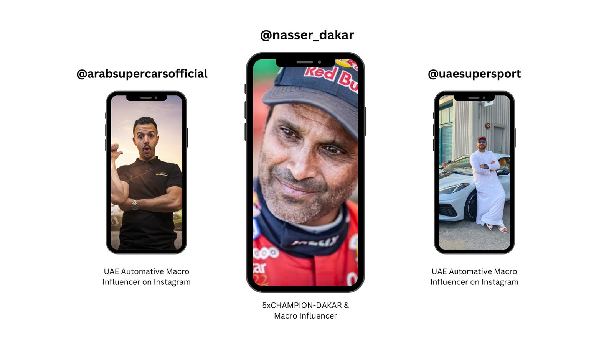
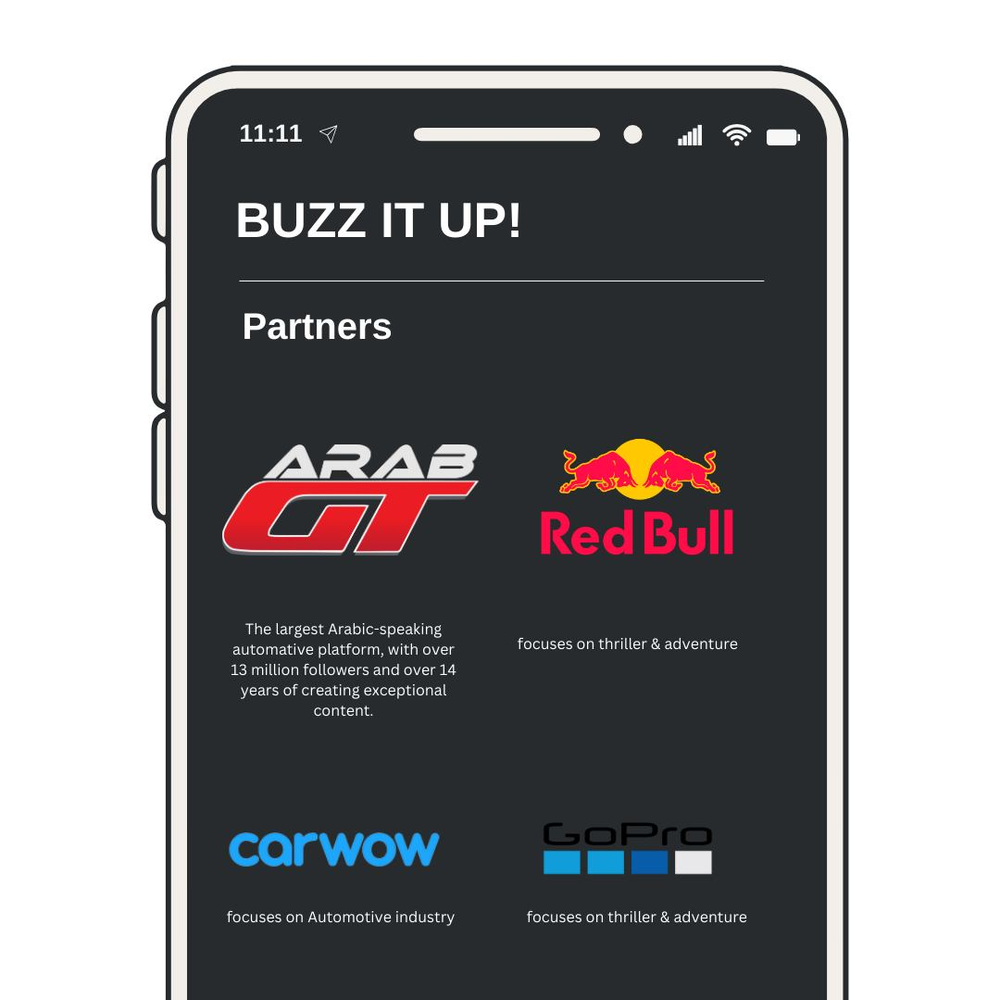
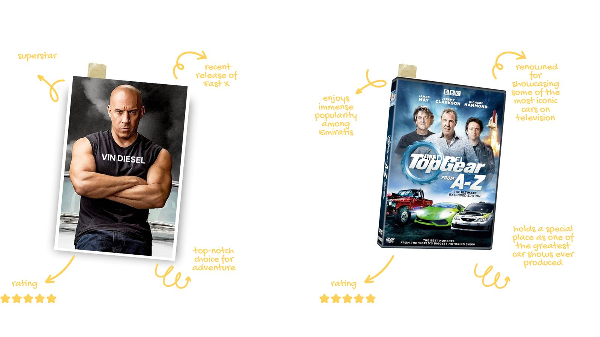

The Land Cruiser had always been a global benchmark for adventure, fun, and boldness. But in the UAE it was losing ground — feeling less exciting to a younger audience, who were starting to question the price gap between it and its competitors.
Reconnect with the young and recover our place as a bold brand once again.
Young people are increasingly showing signs of what market researchers are calling 'The Thrill Deficit.' This demographic, known for its high energy and quest for new experiences, is expressing a growing dissatisfaction with current entertainment and lifestyle options.
Emiratis have a long and close relationship with the desert safari. Safaris offer a unique, bold & fun experience. What if we did the biggest & longest safari ever in the desert of the Emirates with Land Cruisers? Bold — but not enough. What if we were bold enough to go into an adventure that no one knows anything about? Bold, for Toyota, would be to never reveal any details about the adventure. Bold, for young Emiratis, would be to go into the unknown with Toyota.
Rediscover the Toyota Land Cruiser's boldness through the introduction of a fresh and distinctive form of boldness.
Launch Land Cruiser's longest safari as a mysterious adventure — challenge the Bold generation and their greatest weapon: their adventurous spirit.
Chapter One — "We Do Bold, Do You?!" Mysterious invitations went to influencers who own Land Cruisers (loaners for those who don't). Followers registered via a landing page to join meet-ups in Dubai and Abu Dhabi.
Chapter Two — Buzzing It Up. Engagement challenges to guess the mystery, plus partnerships with bold brands and automotive platforms.
Chapter Three — Day of the Operation. Meet-up points led by Toyota team leaders; the adventure unveiled by Top Gear staff and Vin Diesel as its leaders — the longest safari ever in the Emirates desert, documented by drones, GoPros, influencer vlogs and UGC.
Channel plan — three pillars: Subvert (never tell), Less talk, more attitude (poke the generation), and Go massive (own the day of operation). Content was tailored per platform — provocative IG stories and reels, TikTok comedy coverage, text-based mystery tweets, guess-the-mystery teasers on Facebook and Instagram, a long-form YouTube film, and UGC resharing — backed by a search takeover and a moderation team "owning" every reply from a provocation manual.



The slogan 'Bold by Nature' captures the Land Cruiser's DNA and the spirit of those naturally inclined to seek thrills. Mystery provokes the daring nature of youth; the safari — a beloved activity — reignites the Land Cruiser's spirited nature, fosters camaraderie and belonging, making the Land Cruiser more than a vehicle, which also reduces price considerations.
Reference footage gathered during planning — how the safari phase should look and move. Not campaign output.